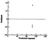
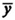
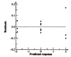
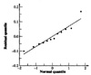
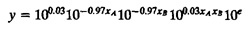
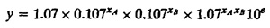

| Previous | Table of Contents | Next |
There are several ways an experienced analyst would find out that the additive model does not represent the data. Among these are the following:
Based on any one of these arguments, the analyst should at least try a multiplicative model and compare the results with those obtained using the additive model. The logarithm of responses and the corresponding analysis is shown in Table 18.4. The percentage of variation explained and the confidence intervals of effects of the two models are listed in Table 18.5. Notice that the interaction with a multiplicative model is almost zero. The two main effects explain 49.9% of the variation each. The unexplained variation is only 0.2%, which is 1/50th of the previous model.

FIGURE 18.3 Plot of residuals versus predicted response for the additive model.
FIGURE 18.4 Normal quantile-quantile plot for residuals of the additive model.
| TABLE 18.4 Transformed Data for Multiplicative Model Example | |||||
|---|---|---|---|---|---|
| I | A | B | AB | y | Mean  |
| 1 | –1 | –1 | 1 | (1.93, 1.90, 2.17) | 2.00 |
| 1 | 1 | –1 | –1 | (–0.05, 0.02, 0.03) | 0.00 |
| 1 | –1 | 1 | –1 | (–0.02, –0.03, 0.05) | 0.00 |
| 1 | 1 | 1 | 1 | (–1.83, –1.90, –1.93) | –1.89 |
| 0.11 | –3.89 | –3.89 | 0.11 | Total | |
| 0.03 | –0.97 | –0.97 | 0.03 | Total/4 | |
| TABLE 18.5. Percentage of Variation Explained by the Two Models | ||||||
|---|---|---|---|---|---|---|
| Additive Model | Multiplicative Model | |||||
| Factor | Effect | Percentage of Variation | Confidence Interval | Effect | Percentage of Variation | Confidence Interval |
| I | 26.55 | (16.35, 36.74) | 0.03 | (–0.02, 0.07)a | ||
| A | –26.04 | 30.1 | (–36.23, –15.84) | –0.97 | 49.9 | (–1.02, –0.93) |
| B | –26.04 | 30.1 | (–36.23, –15.84) | –0.97 | 49.9 | (–1.02, –0.93) |
| AB | 25.54 | 29.0 | (15.35, 35.74) | 0.03 | 0.0 | (–0.02, 0.07)a |
| e | 10.8 | 0.2 | ||||
a Not significant.

FIGURE 18.5 Plot of residuals versus predicted response for the multiplicative model.
A plot of residuals versus predicted response is shown in Figure 18.5. Notice that the residuals are an order of magnitude lower than the response and that there is no trend in the spread of the residuals. A normal quantile–quantile plot is shown in Figure 18.6. The distribution is satisfactorily normal. Overall the multiplicative model appears to be considerably better for this data than the additive model.
The results of the multiplicative model are interpreted as follows. The model is
log(y) = q0 + qAxA + qBxB + qABxAxB + e
or
y = 10q010qAxA10qBxB10qABxAxB10e

FIGURE 18.6 Normal quantile-quantile plot for residuals of the multiplicative model.
Substituting the model parameters, we obtain

or

The time for an average processor on an average benchmark is 1.07. The time on processor A1 is 9 times (0.107–1) that on an average processor. The time on A2 is one-ninth (0.1071) that on an average processor. In other words, time on A1 is 81 times that on A2. Or equivalently, the MIPS rate for processor A2 is 81 times that of A1. Similarly, one can argue that the benchmark B1 executes 81 times more instructions than B2. The interaction is negligible. The results are therefore valid for all benchmark and processor combinations.
| Previous | Table of Contents | Next |
){kind=link}
){kind=link}
){kind=link}
){kind=link}
){kind=link}
){kind=link}
){kind=link}
){kind=link}